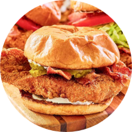
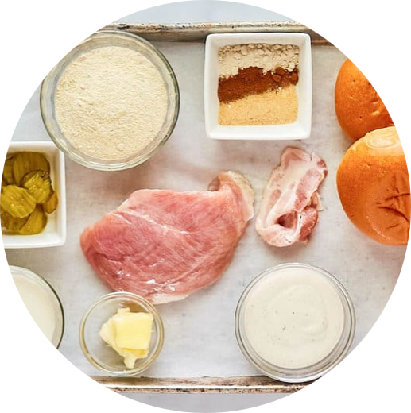

McDonald’s bacon Ranch McCrispy
Ingredients
- Fried chicken breast
- Potato hamburger buns
- Butter, melted
- ranch dressing
- Bacon, cooked
- Crinkle cut pickles
- Lettuce, shredded
- Spread the melted butter on the cut potato rolls. Toast the buns cut side
down in a dry
skillet over medium-high heat until golden brown.
- Spread some ranch dressing on the bottom of the warm toasted potato
roll and place the
fried chicken patty on top. Add two to three slices of
bacon and a few pickle slices.
If you want to make your sandwich a
deluxe,include some shredded lettuce and a slice or
two of tomato.
- Spread ranch dressing on the top bun and place it on the sandwich.

Fried chicken breast
Ingredients
- Chicken breasts. boneless, skinless
- Salt&Pepper
- All-purpose flour
- Cornmeal
- Onion powder
- Garlic powder
- Paprika
- Egg
- Milk
- Vegetable oil for deep frying
- Pat the chicken breasts dry with a paper towel and cut them in half horizontally.
Season
both sides of the chicken with salt and pepper. Reserve for later.
- Set up a breading station by laying out two shallow pans or pie tins next to each
other.
Put a wire rack on top of a rimmed baking tray to the side.
- Fill one shallow pan with all-purpose flour, cornmeal, onion powder,
garlic powder, paprika,
salt, and finely ground black pepper. Mix well.
- Whisk the egg and milk together and pour the mixture into the second shallow pan.
- Take a piece of chicken and coat it in the dry mixture. Shake off any excess.
- Dunk the floured chicken into the wet mixture and let any extra liquid drip off.
- Return the chicken breast to the dry mixture and shake off the excess. Place the
breaded
chicken on the wire rack over the rimmed baking tray.
- Repeat steps 5 to 7 with the remaining pieces of chicken.Fill a heavy-bottom pot with
four
inches of vegetable oil. Using an electric fryer will make> cooking the chicken
much more
manageable.
- Attach a thermometer to the pot’s side and heat the oil over medium-high heat until
it
reaches 350 degrees Fahrenheit.
- Place a clean wire rack on top of a rimmed baking sheet close to where you are frying.
- Once the oil is at the temperature, cook the breaded chicken patties one or two at a time
for 7 to 8 minutes. Use an instant-read thermometer to check that the chicken’s internal
temperature is at least 165 degrees, and then leave the crispy chicken filet to rest on
the wire rack.
- Cook the rest of the chicken in the same way.
